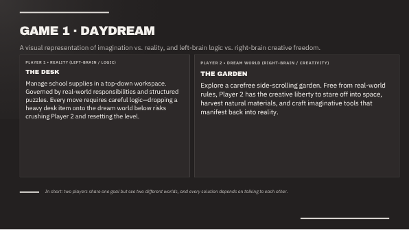

Daydream
An asymmetric local co-op puzzle game. One player arranges real desk objects with the mouse while the other platforms through a daydream garden below. Dropping a heavy object on your partner resets the level.
- Platform
- PC, two-player co-op
- Core skill
- Spatial teamwork and constant communication
- Controls
- Mouse drag and scroll for Player 1; WASD, Space and Shift for Player 2
- References
- It Takes Two, Monument Valley